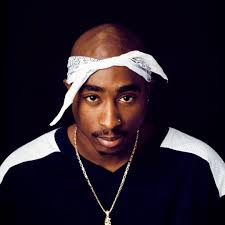
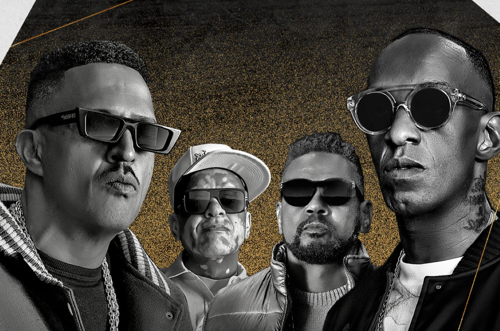

Hip-Hop
O hip-hop, também conhecido como rap, surgiu há cerca de 50 anos nos Estados Unidos como uma forma de expressão cultural de comunidades afro-americanas, principalmente em Nova York. Ele não é apenas um estilo musical, mas a representação de uma cultura, manifestada por meio de danças, grafites, moda e, principalmente, pela música.
Iniciado na década de 1970, o gênero expandiu-se rapidamente pelos Estados Unidos. Consolidou-se também como uma potente forma de protesto, com letras que mostravam a realidade da vida na periferia americana e faziam fortes críticas ao sistema.
Do hip-hop derivaram diversos subgêneros importantes, como o boom bap, o drill e o trap.
Atualmente, o hip-hop figura entre os gêneros mais ouvidos globalmente, impulsionado por artistas de alcance internacional, e possui uma influência significativa também no Brasil.
Artistas fundamentais do Hip-Hop
Alguns artistas foram muito importantes para popularizar essa cultura no mundo e no Brasil, como por exemplo:
- Racionais MC's
- Tupac Shakur (2Pac)
- Sabotage
- The Notorious B.I.G.
- Emicida
- Dr. Dre
Álbuns iconicos do hip-hop
--Escrever algo--
| Álbum | Artista/Banda | Ano de Lançamento | Breve Destaque |
|---|---|---|---|
| The Chronic | Dr. Dre | 1992 | Revolucinou a sonoridade com o inicio do subgenero G-Funk |
| Sobrevivendo no Inferno | Racionais MC's | 1997 | O álbum mais importante do rap brasileiro, tornando-se um marco cultural e sociológico. |
| To Pimp a Butterfly | Kendrick Lamar | 2015 | Um marco do hip hop moderno, com a mistura do rap com o jazz, funk e spoken word. |
| Rap é Compromisso! | Sabotage | 2001 | Narra a realidade da vida na favela do Canão com genialidade e originalidade. O álbum é uma referência absoluta no rap nacional. |
| Illmatic | Nas | 1994 | Considerado por muitos como a "bíblia do hip hop", Illmatic é uma obra-prima de lirismo e narrativa. |
| Doggystyle | Snoop Dogg | 1993 | Considerado um classico do G-Funk, tendo uma lirica descontraida, que explora temas como festas, drogas e mulheres. |
Ícones do Hip Hop e Seu Legado
2Pac: Poeta e Ícone Cultural
Poucos artistas na história da música tiveram o impacto e a intensidade de Tupac Shakur, também conhecido como 2Pac. Considerado um dos maiores rappers de todos os tempos, ele era muito mais do que um músico: era um poeta, ator e uma voz poderosa para os marginalizados. Suas letras, carregadas de paixão e um flow inconfundível, exploravam a dualidade da vida no gueto, alternando entre a celebração e a festa da "California Love" e as profundas críticas sociais sobre racismo e violência em faixas como "Changes". Seu legado transcende o hip-hop, e sua influência como um complexo ícone cultural continua a ressoar em todo o mundo.
Racionais MC's: A Voz da Periferia Brasileira
No panteão do hip-hop brasileiro, os Racionais MC's ocupam um lugar sagrado. Formado em São Paulo por Mano Brown, Ice Blue, Edi Rock e KL Jay, o grupo se tornou a voz definitiva da periferia. Suas letras não são apenas rimas; são crônicas afiadas e contundentes da realidade das favelas, denunciando o racismo, a violência policial e a desigualdade social com uma honestidade brutal. Com o álbum divisor de águas "Sobrevivendo no Inferno", eles não apenas revolucionaram a música nacional, mas forçaram o Brasil a encarar uma realidade que muitas vezes preferia ignorar, solidificando seu status como o grupo mais importante e influente da história do rap no país.